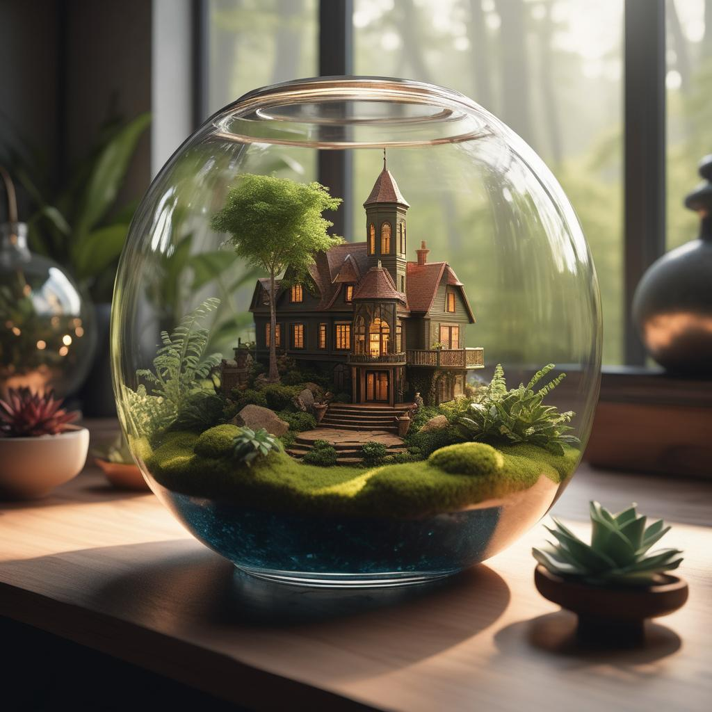
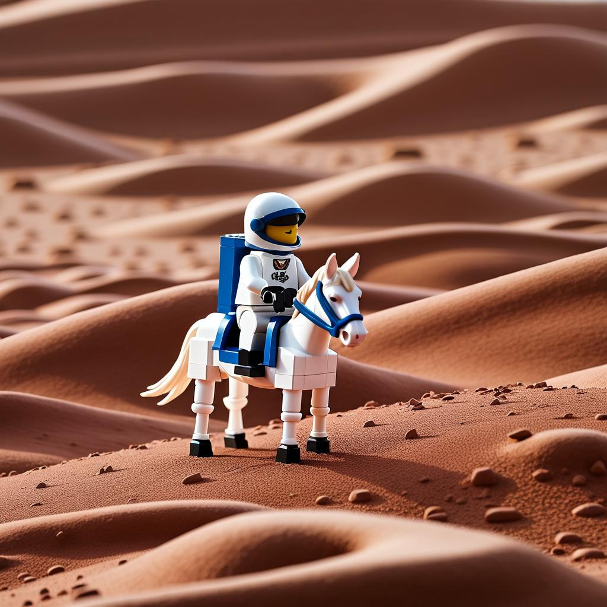
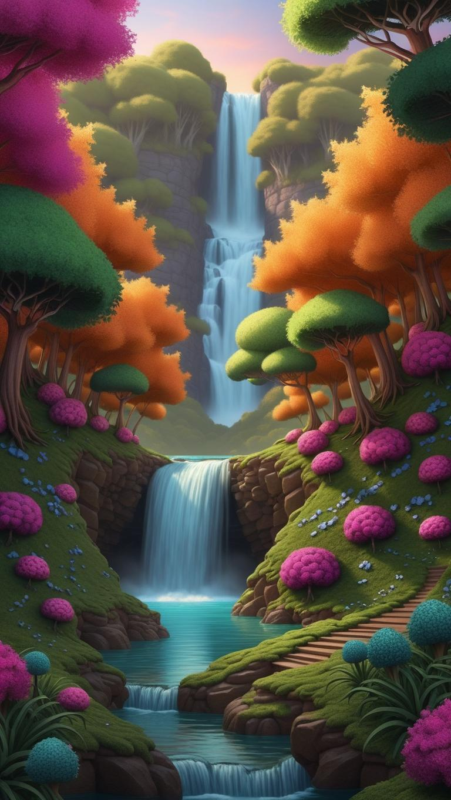
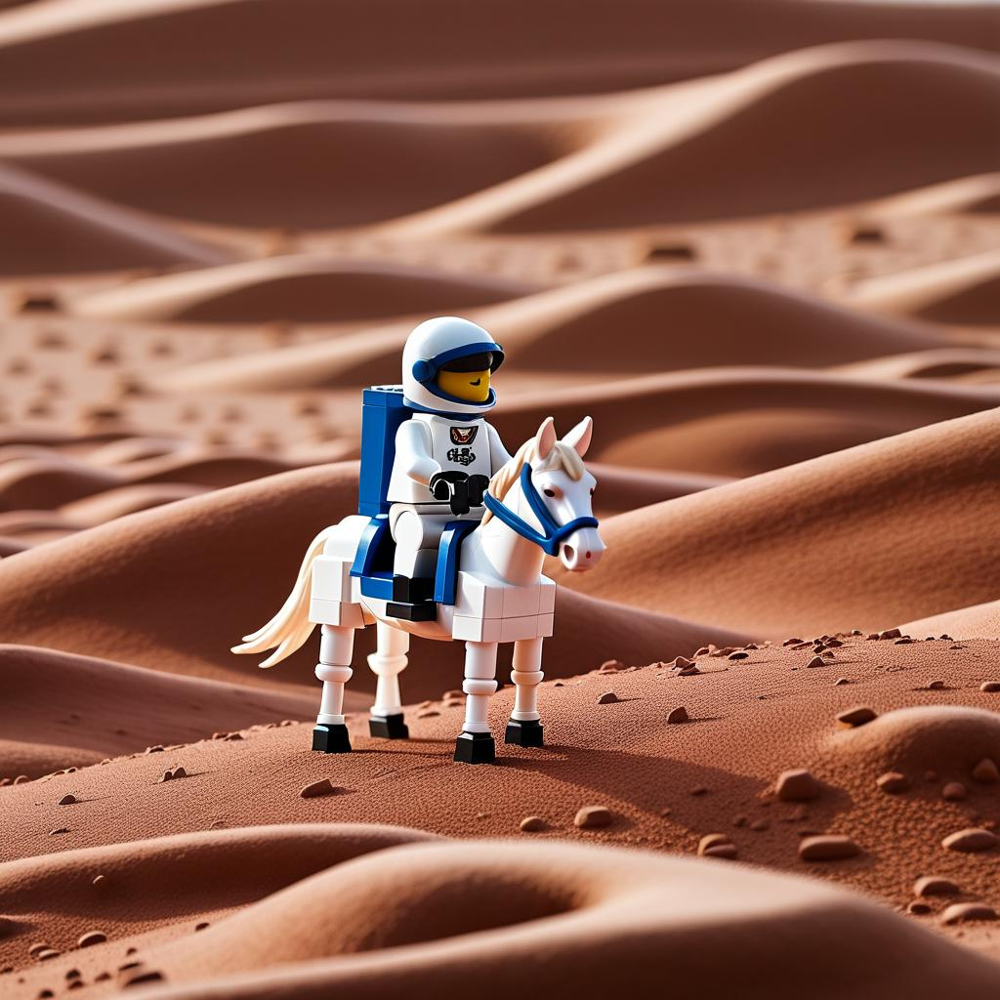
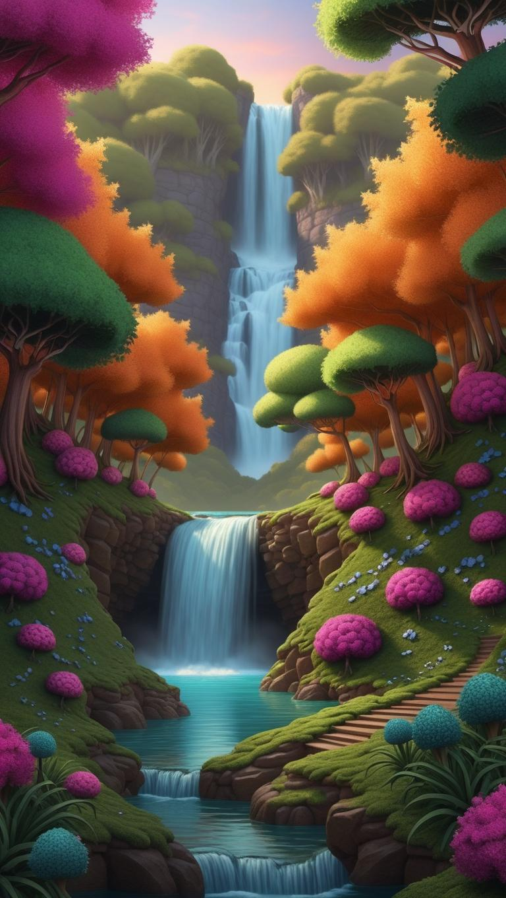
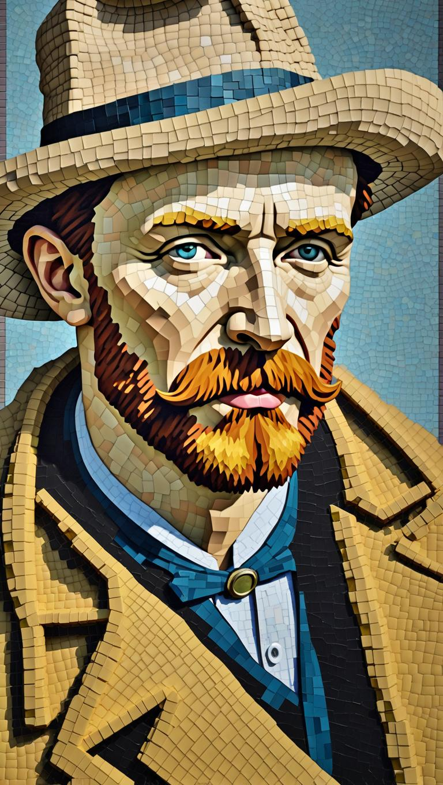
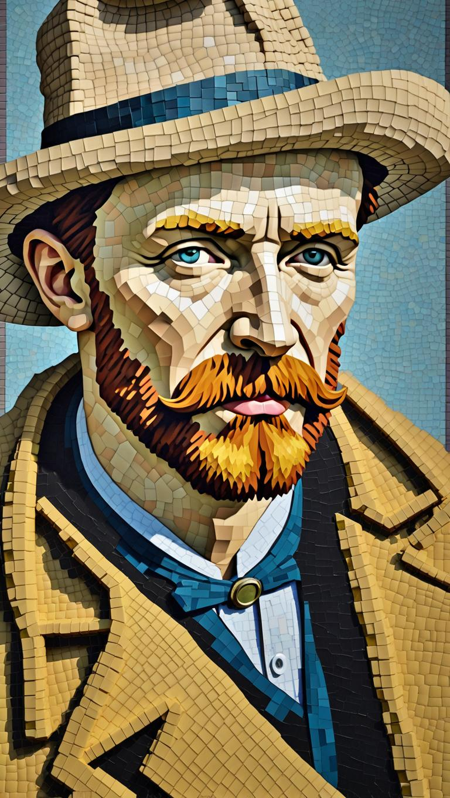
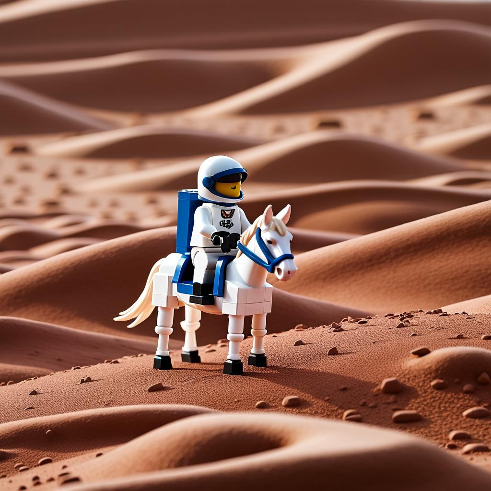
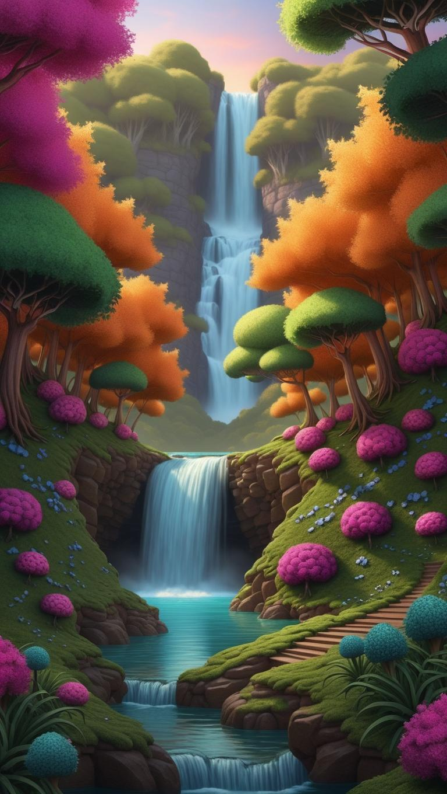
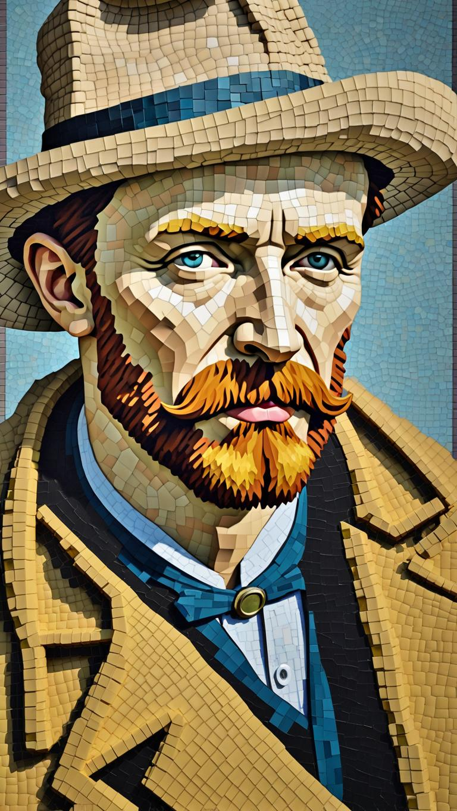

One GPU is enough!
With Pixelsmith, you can effortlessly scale pre-trained generative models to generate gigapixel-scale images on a single Nvidia RTX 3090 (24GB VRAM).
Note: It’s better to view the website on a computer for optimal experience.
Select an image:

 




 





Background Image

Foreground Image